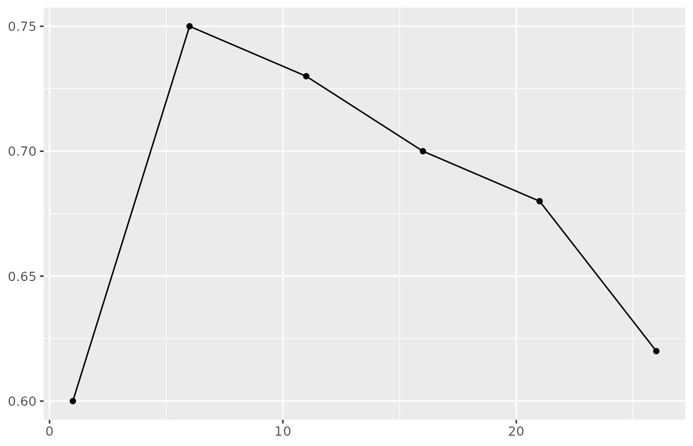

Welcome to rWinePredictor!
The rWinePredictor package is designed to assist with
the building and testing of binary classification models. While
originally created to predict wine quality using wine properties, this
package can be used in other classification models. The functions
included allow users to:
Conduct EDA grouped by the classes in the target factor
Create tailored line plots
Calculate model statistics (accuracy, precision, and recall) quickly and easily
To get started, we load the packages rWinePredictor and
dplyr:
library(dplyr)
#>
#> Attaching package: 'dplyr'
#> The following objects are masked from 'package:stats':
#>
#> filter, lag
#> The following objects are masked from 'package:base':
#>
#> intersect, setdiff, setequal, union
library(rWinePredictor)Data
The original dataset used in the analysis of wine quality can be
found here.
However, to emphasize the universal usage of this package, we will use
the mtcars dataset in this vignette. Because this is a
binary classification problem, we will first identify the target fetaure
(in this case, number of cylinders), filter for only 4 or 6 cyclinder
cars, drop the car name index and other factor features, and convert the
cyclinder column to a factor.
df <- mtcars %>%
filter(cyl < 8) %>%
select(mpg, cyl, disp, hp, drat, wt, qsec) %>%
mutate(cyl = as.factor(cyl))
rownames(df) <- NULL
head(df)
#> mpg cyl disp hp drat wt qsec
#> 1 21.0 6 160.0 110 3.90 2.620 16.46
#> 2 21.0 6 160.0 110 3.90 2.875 17.02
#> 3 22.8 4 108.0 93 3.85 2.320 18.61
#> 4 21.4 6 258.0 110 3.08 3.215 19.44
#> 5 18.1 6 225.0 105 2.76 3.460 20.22
#> 6 24.4 4 146.7 62 3.69 3.190 20.00generate_summary_stats
As part of EDA, we may want to get the number of 4 and 6 cylinder
cars in the dataset along with the mean values for feature of each
cyclinder class. To do so, we can use
generate_summary_stats as seen below:
eda <- generate_summary_stats(df, cyl)
eda
#> # A tibble: 2 × 9
#> cyl count percentage mpg_avg disp_avg hp_avg drat_avg wt_avg qsec_avg
#> <fct> <int> <dbl> <dbl> <dbl> <dbl> <dbl> <dbl> <dbl>
#> 1 4 11 61.1 26.7 105. 82.6 4.07 2.29 19.1
#> 2 6 7 38.9 19.7 183. 122. 3.59 3.12 18.0The resulting summary table provides us with some insight about the
dataset. We can see that it has grouped the classes in our specified
target column, counted the observations (in count) and then
proceeded to calculate the mean of all the features for both cylinder
classes.
create_lineplot
This function was initially built to compare accuracies across
different k values for a K-NN model. However, it has many purposes and
can be used to plot any numerical value on the y-axis against any
continuous numerical value, like time on the x-axis. Using a toy
dataframe and create_lineplot, we can plot the accuracy
against the k-value.
acc_k <- data.frame(
acc = c(0.6, 0.75, 0.73, 0.7, 0.68, 0.62),
k_val = c(1, 6, 11, 16, 21, 26))
lp <- create_lineplot(acc_k, k_val, acc)
lp
calculate_model_metric
After constructing the binary classification model, users may want to
calculate either the accuracy, precision, or recall. Using
calculate_model_metric makes this easy and quick. To
demonstrate, we will use the two class dataset from the parsnip
package.
From the scatterplot, we can see that there is some correlation
between width and injuries. However, this
correlation does not seem to be very strong. Despite this small
correlation, we will create a linear regression model using
width as a predictor and injuries as the
target. To do this, we can use the function
fit_linear_model.
library(yardstick)
preds_df = yardstick::two_class_example
accuracy <- calculate_model_metric(preds_df, truth_col='truth', predictions_col='predicted', metric="accuracy")
precision <- calculate_model_metric(preds_df, truth_col='truth', predictions_col='predicted', metric="precision")
recall <- calculate_model_metric(preds_df, truth_col='truth', predictions_col='predicted', metric="recall")
paste("Accuracy = ", accuracy)
#> [1] "Accuracy = 0.838"
paste("Precision = ", precision)
#> [1] "Precision = 0.819494584837545"
paste("Recall = ", recall)
#> [1] "Recall = 0.87984496124031"This document has highlighted all the functions of the
rWinePredictor package. You are now set to use this package
in your analysis.